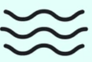

<!DOCTYPE html>
<html lang="en">
<head>
  <meta charset="UTF-8">
  <meta name="viewport" content="width=device-width, initial-scale=1.0">
  <title>Image Classification Experiment</title>
  <script src="https://unpkg.com/jspsych@8.1.0"></script>
  <script src="https://unpkg.com/@jspsych/plugin-fullscreen@2.0.0"></script>
  <script src="https://unpkg.com/@jspsych/plugin-html-button-response@2.0.0"></script>
  <script src="https://unpkg.com/@jspsych/plugin-image-button-response@2.0.0"></script>
  <link href="https://unpkg.com/jspsych@8.1.0/css/jspsych.css" rel="stylesheet" type="text/css" />
</head>
<body>
  <script>
    // Initialize jsPsych
    const jsPsych = initJsPsych({
      on_finish: function() {
        jsPsych.data.displayData(); // Display data at the end
      }
    });

    // Enter fullscreen
    var enter_fullscreen = {
      type: jsPsychFullscreen,
      fullscreen_mode: true
    };

    // Exit fullscreen
    var exit_fullscreen = {
      type: jsPsychFullscreen,
      fullscreen_mode: false,
      delay_after: 0
    };

    // Instructions for the experiment
    var instructions = {
      type: jsPsychHtmlButtonResponse,
      stimulus: `<h2>Welcome to the Cognitive Science Study</h2>
           <p>This experiment is designed to study how individuals classify visual stimuli. You will be presented with a series of images and asked to categorize each one based on specific visual features.</p>
           <p>Please ensure the following before starting:</p>
           <ul>
             <li>Perform the experiment by yourself, without distractions.</li>
             <li>Be in a quiet and closed space to maintain focus.</li>
             <li>Sit comfortably and position yourself directly in front of the computer screen.</li>
             <li>Pay attention to the screen for the entire duration of the experiment.</li>
             <li>Take a moment to adjust your seating and ensure you are comfortable.</li>
           </ul>
           <p>Please respond as accurately and as quickly as possible. Your responses will contribute to our understanding of human perception and decision-making processes.</p>
           <p>Click "Start" when you are ready to begin.</p>`,
      choices: ['Start']
    };

    // Define an image classification trial
    var createImageTrial = function(imagePath) {
      return {
        type: jsPsychImageButtonResponse,
        stimulus: imagePath,
        choices: [
          '',
          ''
        ],
        prompt: "<p>Is this person a Wave or a Standing Wave?</p>",
        on_finish: function(data) {
          console.log(data); // Log response data
        }
      };
    };

    // Create a timeline of image trials
    var imagePaths = [
      'img/happy_face_1.png',
      'img/sad_face_1.png',
      'img/happy_face_2.png',
      'img/sad_face_2.png'
    ];

    var imageTrials = imagePaths.map(createImageTrial);

    // Debriefing message
    var debrief = {
      type: jsPsychHtmlButtonResponse,
      stimulus: `<h2>Thank you for participating!</h2>
                 <p>Your responses have been recorded.</p>
                 <p>Click "Finish" to end the experiment.</p>`,
      choices: ['Finish']
    };

    // Build the experiment timeline
    var timeline = [];
    timeline.push(enter_fullscreen);
    timeline.push(instructions);
    timeline.push(...imageTrials); // Add image trials to timeline
    timeline.push(exit_fullscreen);
    timeline.push(debrief);

    // Start the experiment
    jsPsych.run(timeline);
  </script>
</body>
</html>
